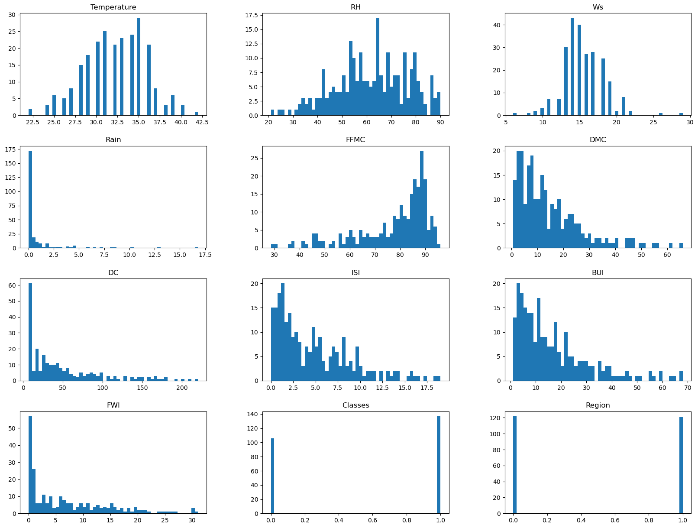
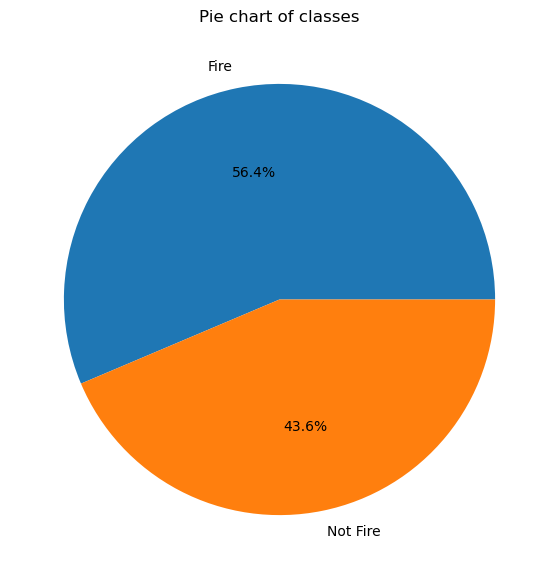
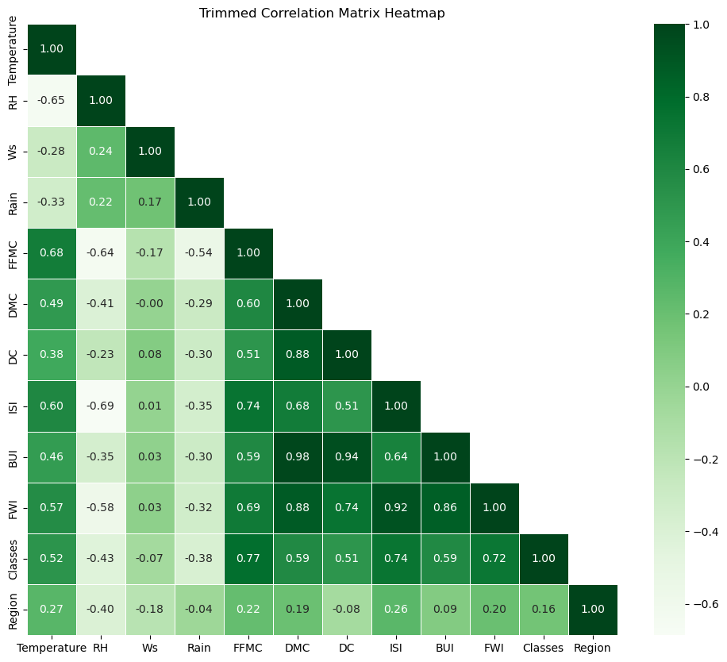
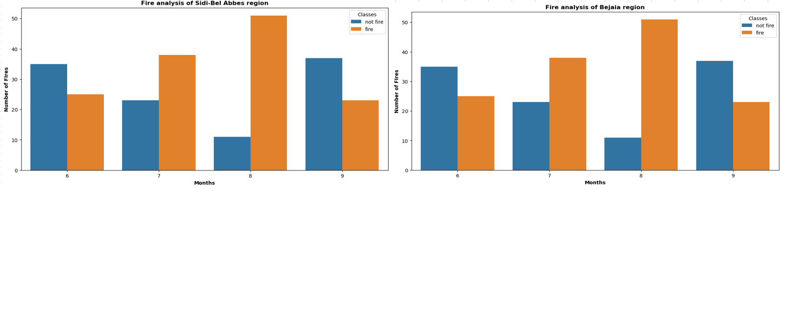
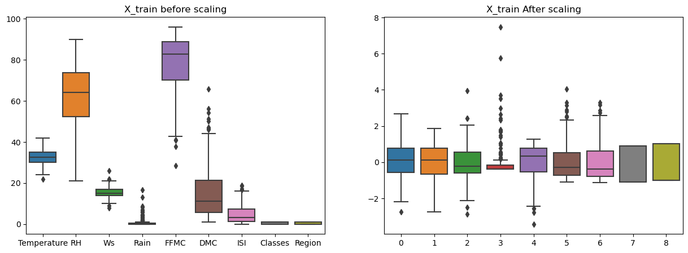

Ridge and Lasso regression are regularization techniques used in linear regression to prevent overfitting and improve the model's generalization performance. Both methods introduce a penalty term to the linear regression cost function.
Overfitting and underfitting are two common problems encountered in machine learning. They occur when a machine learning model fails to generalize well to new data.
Overfitting:
Description: Overfitting occurs when a machine learning model learns the training data too well, including the noise and irrelevant patterns. As a result, the model becomes too complex and fails to capture the underlying relationships in the data. This leads to poor performance on unseen data.
Signs of overfitting:
The model performs well on the training data but poorly on unseen data.
The model is complex and has a large number of parameters.
Causes: Too complex model, excessive training time, or insufficient regularization.
Underfitting
Description: Underfitting occurs when a machine learning model is too simple and does not capture the underlying relationships in the data. This results in poor performance on both the training data and unseen data.
Signs of underfitting:
The model performs poorly on both the training data and unseen data.
The model is simple and has a small number of parameters.
Causes: Model complexity is too low, insufficient training, or inadequate feature representation.
Bias (Systematic Error):
Description: The model consistently makes predictions that deviate from the true values.
Symptoms: Consistent errors in predictions across different datasets.
Causes: Insufficiently complex model, inadequate feature representation, or biased training data.
Variance (Random Error):
Description: The model's predictions are highly sensitive to variations in the training data.
Symptoms: High variability in predictions when trained on different subsets of the data.
Causes: Too complex model, small dataset, or noisy training data.
Data Leakage:
Description: Information from the validation or test set inadvertently influences the model during training.
Causes: Improper splitting of data, using future information during training.
Model Instability:
Description: Small changes in the input data lead to significant changes in model predictions.
Symptoms: Lack of robustness in the model's performance.
Causes: Sensitivity to outliers, highly nonlinear relationships.
Multicollinearity:
Description: High correlation among independent variables in regression models.
Symptoms: Unstable coefficient estimates, difficulty in isolating the effect of individual variables.
Causes: Redundant or highly correlated features.
Imbalanced Data:
Description: A disproportionate distribution of classes in classification problems.
Symptoms: Biased models toward the majority class, poor performance on minority classes.
Causes: Inadequate representation of minority class, biased sampling.
Preventing Overfitting and Underfitting
There are a number of techniques that can be used to prevent overfitting and underfitting. These include:
Regularization: Regularization is a technique that penalizes complex models. This helps to prevent the model from learning the noise and irrelevant patterns in the training data. Common regularization techniques include L1 regularization, L2 regularization, and dropout.
Early stopping: Early stopping is a technique that stops training the model when it starts to overfit on the validation data. The validation data is a subset of the training data that is held out during training and used to evaluate the model's performance.
Cross-validation: Cross-validation is a technique that divides the training data into multiple folds. The model is trained on a subset of the folds and evaluated on the remaining folds. This process is repeated multiple times so that the model is evaluated on all of the data. Cross-validation can be used to select the best hyperparameters for the model.
Model selection: Model selection is a technique that compares different models and selects the one that performs best on the validation data. This can be done using a variety of techniques, such as k-fold cross-validation or Akaike Information Criterion (AIC).
Ridge Regression (reduce overfitting)
Ridge regression, also known as Tikhonov regularization or L2 regularization, adds the squared sum of the coefficients to the cost function. This regularization method is used to reduce overfitting.
The regularization term is proportional to the square of the
L2 norm of the coefficients:
$$\text{Ridge Cost Function} = \frac{1}{2m}\sum_{i=1}^m\left(h_\beta(x^{(i)}) - y^{(i)}\right)^2 + \alpha \sum_{i=1}^n \beta_i^2$$
where:
\(m\) is the number of training examples.
\(h_\beta(x^{(i)})\) is the predicted value for the \(i-\)th example.
\(y^{(i)}\) is the actual output for the \(i-\)th example.
\(\beta_i\) is the coefficient associated with the \(i-\)th feature.
here is the regularization strength. Ridge regression tends to shrink the coefficients towards zero but does not lead to exact zero coefficients.
The firat term in the above equation is nothing but 'Least Squares Cost Function' used in the gradient decent method.
Ridge optimization:
The goal is to find the value of \(\beta\) that minmize the Ridge cost function. The optimization problem can be stated as:
$$\underset{\beta}{min} \left(\frac{1}{2m}\sum_{i=1}^m\left(h_\theta(x^{(i)}) - y^{(i)}\right)^2 +\alpha \sum_{i=1}^n \beta_i^2\right)$$
Ridge Cost function. Here \(\lambda =0\) correspond to the gradient dicent cost function. It is clear that, as \(\lambda\) increases,
global minima also decreases, but it will never reach 0.
In simpler terms, without the last term in the Lasso cost function, the model might overfit the data by assigning too much importance to all features. However, with the addition of the last term, Lasso introduces a mechanism that can shrink some coefficients to exactly zero. This results in a more parsimonious model by effectively eliminating the influence of certain features.
Let's illustrate with an example:
Suppose our linear regression model without Lasso regularization is:
This means Lasso automatically diminishes the reliance on certain features, in this case, reducing the dependence on the last feature (\(x_3\)) which was already deemed insignificant. The regularization process aids in feature selection, promoting a more robust and interpretable model.
In Scikit-learn, Ridge regression is implemented in the `Ridge` class.
Lasso Regression (feature selection)
Lasso regression, or L1 regularization, adds the sum of the absolute values of the coefficients to the cost function. The regularization term is proportional to the L1 norm of the coefficients:
$$\text{Lasso Cost Function} = \frac{1}{2m}\sum_{i=1}^m\left(h_\theta(x^{(i)}) - y^{(i)}\right)^2+ \alpha \sum_{i=1}^n |\beta_i|.$$
Similar to Ridge regression, is the regularization strength.
Lasso regression has the property of producing sparse models by setting some coefficients to exact zero. What it means is that the features that are not that important will automatically get deleted
and features that are very very important will be considered.
Lasso Optimization
The goal is to find the value of \(\beta\) that minmize the Lasso cost function. The optimization problem can be stated as:
$$\underset{\beta}{min} \left(\frac{1}{2m}\sum_{i=1}^m\left(h_\theta(x^{(i)}) - y^{(i)}\right)^2 +\alpha \sum_{i=1}^n |\beta_i|\right)$$
Example:
When you apply the Lasso method to the linear regression model:
$$h_\theta(x) = \theta_0 +\theta_1 x_1 +\theta_2 x_2+\theta_3 x_3 = 0.34+ 0.48 x_1 + 0.52 x_2 + 0.24 x_3$$
Lasso introduces a penalty term to the cost function that contains the absolute values of the coefficients \(\propto \alpha \sum_{i=1}^n |\beta_i|\), where
\(\alpha\) is the regularization strength. When using Lasso, it tends to shrink the coefficients towards zero, and it may even set some coefficients exactly to zero. The process of setting Some
coefficients to zero is what makes Lasso particulalry useful for feature selection.
In simpler terms, Lasso may lead to a model with fewer features by reducing the impact of less important features, possibly making the equation look like:
$$h_\theta(x)= 0.34+ 0.32 x_1 + 0.40 x_2 + 0.12 x_3$$
Notice how some coefficients have been reduced, and it might indicate that the Lasso method has identified and downplayed less influential features, making the model more parsimonious and potentially improving its generalization to new data.
Difference between the Ridge and Lasso
Ridge: Ridge might shrink the coefficients, but it won't set them exactly to zero. It will encourage smaller values fo \(\theta_i\)
Lasso: Lasso might not only shrink the coefficients but could also set some of them exactly to zero. It tends to prefer sparsity in the model, making it useful for feature selection.
In summary, Ridge and Lasso provide different regularization techniques with Ridge being more continuous in its shrinking effect, while Lasso introduces a sparsity element by potentially eliminating some features entirely. The choice between them depends on the specific characteristics of your data and the desired properties of your model.
In Scikit-learn, Lasso regression is implemented in the 'Lasso' class.
Usage in scikit-learn:
from sklearn.linear_model import Ridge, Lasso
from sklearn.model_selection import train_test_split
from sklearn.preprocessing import StandardScaler
# Assuming X_train, X_test, y_train, y_test are defined
scaler = StandardScaler()
X_train_scaled = scaler.fit_transform(X_train)
X_test_scaled = scaler.transform(X_test)
# Ridge Regression
ridge_reg = Ridge(alpha=1.0) # Adjust alpha as needed
ridge_reg.fit(X_train_scaled, y_train)
ridge_score = ridge_reg.score(X_test_scaled, y_test)
# Lasso Regression
lasso_reg = Lasso(alpha=1.0) # Adjust alpha as needed
lasso_reg.fit(X_train_scaled, y_train)
lasso_score = lasso_reg.score(X_test_scaled, y_test)
Elastic Net
Elastic Net is a regularization technique that combines both L1 (Lasso) and L2 (Ridge) regularization terms in the linear regression cost function.
It is particularly useful when dealing with datasets that have a large number of features, and some of these features are correlated.
The Elastic Net cost function is a combination of the L1 and L2 regularization terms:
$$\text{Elastic Net Cost Function} = \frac{1}{2m}\sum_{i=1}^m\left(h_\beta(x^{(i)}) - y^{(i)}\right)^2 + \alpha \left(\rho \sum_{i=1}^n |\beta_i| +\frac{1-\rho}{2} \sum_{i=1}^n \beta_i^2 \right)$$
where:
Least Squares Cost Function is the standard least squares cost function, which measures the difference between predicted and actual values.
is the total regularization strength, controlling the overall amount of regularization applied.
is the mixing parameter that determines the balance between the L1 and L2 regularization. It basically control the trade-off betwee the L1 and L2 regularization.
When:
\(\rho= 0 \Rightarrow\) Elastic Net is equivalent to Ridge (L2 regularization),
\(\rho= 1 \Rightarrow\) it is equivalent to Lasso (L1 regularization only).
The terms \(\sum_{i=1}^n |\beta_i|\) and \(\sum_{i=1}^n \beta_i^2\) represents the L1 and L2 regularization penalties applied to the coefficients \(\beta_i\) respectively.
The coefficients \(\beta_i\) are the parameters being optimized during the training process.
In mathematical terms, if \(X\) is the feature matrix, \(\beta\) is the vector of coefficients, and \(y\) is the target variables, the Elastic Net cost function can be written as:
Use Elastic Net when you suspect that there is multicollinearity among your features and you also want the benefit of feature selection.
It is a more flexible regularization method as it allows you to tune the balance between L1 and L2 penalties.
In summary, Elastic Net provides a balanced regularization approach that incorporates the advantages of both Lasso and Ridge regression, offering flexibility in handling different types of datasets.
Example project: Algerian forest fire data analysis
In this project, we have considered the dataset on the ALgerian Forest Fires, which can be obtained from the: website.
About the dataset:
The dataset includes 244 instances that regroup a data of two regions of ALgeria, namely the Bejaia region located in the norteast of Algeria and the Sidi Bel-abbes region located in the northwest of Algeria.
122 instances for each region.
The period from June 2012 to Septermber 2012. The datset includes attributes and 1 output attribute (class). The 244 instances have been classified into fire (138 classes) and not fire (106 classes) classes.
Let's first start with importing the libraries and then the dataset:
import pandas as pd
import matplotlib.pyplot as plt
import numpy as np
import seaborn as sns
%matplotlib inline
df = pd.read_csv('Algerian_forest_fires_dataset_UPDATE.csv', header=1)
I have kept the data file in same directory where the Jupyter notebook is present. This dataset contains two section of data on the basis of the two regions: 'Bejaia region' and 'Sidi Bel-abbes region'. We have created a combined dataset with a column added for the two regions with number 0 for first one and 1 for second region.
# Extract data for the Bejaia region
bejaia_data = df.iloc[bejaia_header_row :sidi_bel_abbes_header_row].copy()
# Extract data for the Sidi-Bel Abbes region
sidi_bel_abbes_data = df.iloc[sidi_bel_abbes_header_row:].copy()
# Add a new column 'Region' with values 0 for the Bejaia region and 1 for the Sidi-Bel Abbes region
bejaia_data['Region'] = 0
sidi_bel_abbes_data['Region'] = 1
# Concatenate the two DataFrames back together
final_df = pd.concat([bejaia_data, sidi_bel_abbes_data])
# Reset the index of the final DataFrame
final_df.reset_index(drop=True, inplace=True)
After doing the data engineering we will have our final data frame (for more details on it, you can look at Jupyter notebook).
Extrapolatory data analysis:
Histogram plots:
## Density plot for all features
df_copy.hist(bins=50, figsize=(20,15), grid=False)
plt.show()

Pie chart for the classes:
## PErcentage for category
percentage = df_copy['Classes'].value_counts(normalize=True)*100
# Pie chart for the category
classlabels = ["Fire", "Not Fire"]
plt.figure(figsize=(12,7)) # Corrected the function name to plt.figure
plt.pie(percentage, labels=classlabels, autopct='%1.1f%%')
plt.title("Pie chart of classes")
plt.show()

Correlation plots:
# Calculate the correlation matrix
correlation_matrix = df_copy.corr()
# Create a mask to hide the upper triangle of the correlation matrix
mask = np.triu(np.ones_like(correlation_matrix, dtype=bool), k=1)
# Plotting the heatmap with the upper triangle masked
plt.figure(figsize=(12, 10))
sns.heatmap(correlation_matrix, annot=True, cmap='Greens', fmt=".2f", linewidths=.5, mask=mask)
plt.title('Trimmed Correlation Matrix Heatmap')
plt.show()

Checking the outliers in FWI column
## Box plot to see the outliers
sns.boxplot(df_copy['FWI'], color='y')
plt.show()
Monthly fire analysis:
dftemp = final_df.loc[final_df['Region'] == 1] # here for second region it should be 0.
plt.subplots(figsize=(13,6))
sns.countplot(x='month', hue='Classes', data=final_df)
plt.ylabel('Number of FIres', weight='bold')
plt.xlabel('Months', weight='bold')
plt.title("Fire analysis of Sidi-Bel Abbes region", weight='bold')
plt.show()
The combined plot for the two regions can be seen here:

Ridge lasso analysis:
In this part, we will work on ridge lasso analysis part. The original code can be found at my github repository
Feature scaling or standardization:
from sklearn.preprocessing import StandardScaler
scaler = StandardScaler()
X_train_scaled =scaler.fit_transform(X_train)
X_test_scaled = scaler.transform(X_test)
plt.subplots(figsize=(15,5))
plt.subplot(1,2,1)
sns.boxplot(data = X_train)
plt.title("X_train before scaling")
plt.subplot(1,2,2)
sns.boxplot(data = X_train_scaled)
plt.title("X_train After scaling")
plt.show()

Linear-regression method:
Here we will start with linear regression method.